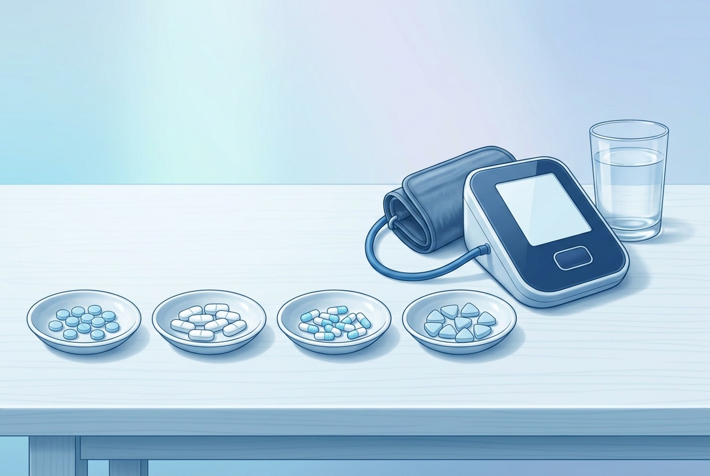

한눈에 보기
계열 평균 강하
8~10 / 4~7
mmHg (수축기/이완기)
직접 비교에서 앞선 ARB
아질사르탄
이달비 · 나머지 ARB는 서로 비슷
통풍·고요산이면
로살탄
요산도 함께 ↓
임신 중에는
라베탈롤
ACE 억제제·ARB는 금기
계열별 평균 수축기 혈압 강하 (mmHg, 표준용량·가짜약 대비)
ARB안지오텐신 수용체 차단제
10.3
베타차단제심장 박동을 늦추는 약
9.2
칼슘차단제 (CCB)혈관을 넓히는 약
8.8
이뇨제 (티아지드)염분·수분을 빼는 약
8.8
ACE 억제제ARB의 형제 약
8.5

막대 길이가 비슷하다 = 계열 간 차이가 작다는 뜻입니다. 약은 세기 자체보다 동반질환과 부작용(몸에 맞는지)으로 고릅니다.
 ① ARB — 가장 많이 쓰는 혈압약
① ARB — 가장 많이 쓰는 혈압약
| 묶음 | 성분 · 수축기 강하 (대략) | 특징 |
|---|---|---|
| 직접 비교에서 앞선 약 | 아질사르탄 (이달비) ~13 | 80mg이 발사르탄 320mg·올메사르탄 40mg보다 혈압을 더 낮춘 직접 비교 연구가 있습니다. |
| 표준 ARB — 서로 비슷 | 올메사르탄 ~12 · 텔미사르탄 ~11 · 피마사르탄 (카나브·국산) ~11 · 칸데사르탄 ~10 · 이르베사르탄 ~10 | 텔미사르탄: 작용이 길어 새벽까지 유지 · 칸데사르탄: 심장이 약한 분의 입원을 줄인 근거 · 피마사르탄: 국내 개발 · 이르베사르탄: 콩팥 보호 근거 |
| 상대적으로 약한 편 | 발사르탄 ~8 · 로살탄 ~8 | 발사르탄: 심부전 치료 근거, 복합제가 다양 · 로살탄: 요산을 함께 낮춰 통풍·고요산에 유리 |
⚠️ 여러 연구(46개)를 모은 최상위 근거는 ARB 성분 간 혈압 강하 차이가 거의 없다고 봅니다. 숫자는 서로 다른 시험·허가자료의 대략치라 순위처럼 읽지 마세요.
② 칼슘차단제 (CCB) — 혈관을 넓히는 약
| 성분 (제품 예) | 수축기 강하 (대략) | 특징·주의 |
|---|---|---|
| 암로디핀 | ~9 | 하루 한 번, 효과가 매우 오래감(반감기 30~50시간). 한 번 잊어도 효과 유지. 가장 많이 쓰는 기준 약. |
| S-암로디핀 | ~9 | 유효 성분만 모은 약(2.5mg ≈ 암로디핀 5mg). 다리 부종이 더 적은 편. |
| 니페디핀 서방형 (아달라트 오로스) | ~9 | 천천히 녹는 제형으로 하루 한 번. 오래 검증됐고 임신 중에도 사용 가능. |
| 아젤니디핀 | ~9 | 암로디핀급 강하 + 맥박을 오히려 늦춰 두근거림이 적음. |
| 레르카니디핀 | ~8 | 효과는 암로디핀급, 다리 부종이 훨씬 적음(부종 7% 대 14%). |
| 실니디핀 | ~8 | 교감신경을 함께 눌러 부종·두근거림이 적고 단백뇨에도 유리. |
| 펠로디핀·베니디핀·라시디핀 | ~8 | 혈관에 주로 작용하는 약들. 효과는 암로디핀과 대체로 비슷, 하루 한 번. |
| 딜티아젬·베라파밀 | ~5 | 혈압 강하는 약하나 맥박을 늦춤 → 협심증·빠른 맥 부정맥에 함께 쓸 때 유용. |
칼슘차단제는 성분별 가짜약 대비 자료가 충분치 않아 계열값 기준 대략치입니다 — 성분 간 강하 차이는 크지 않고, 실제 차이는 부종·맥박·작용 시간입니다.